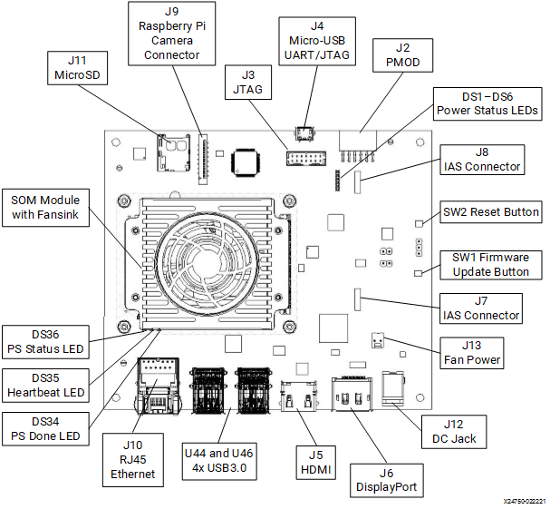
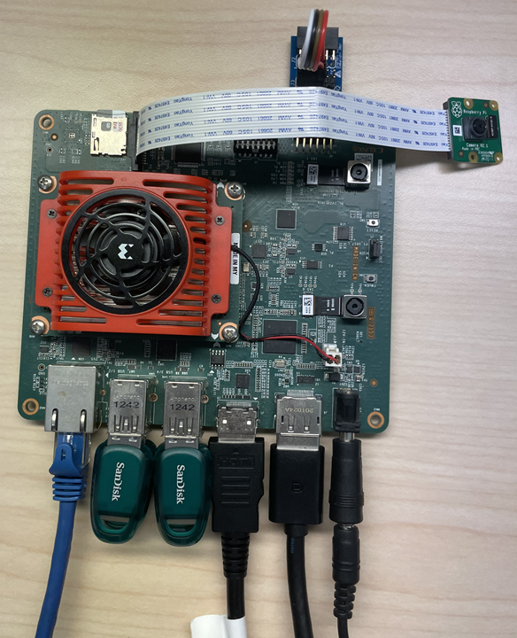
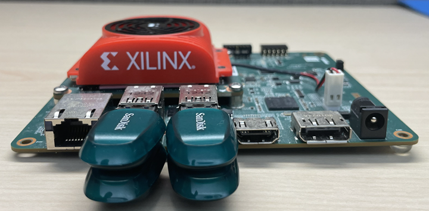
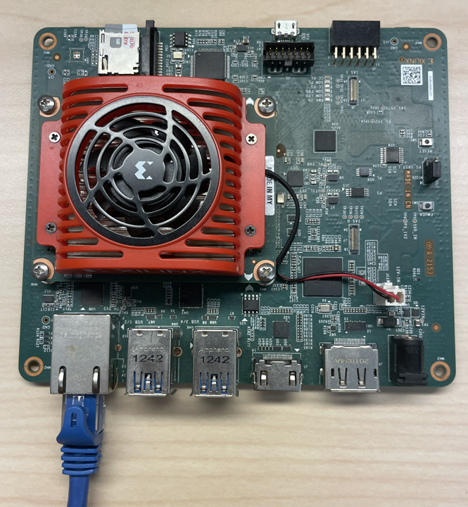
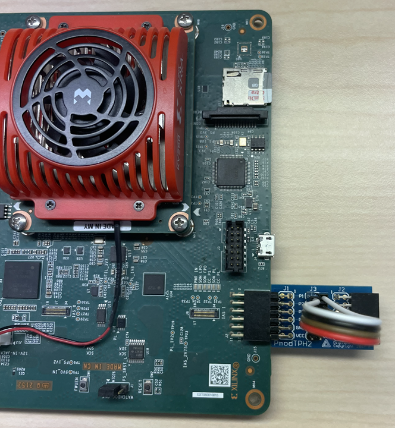
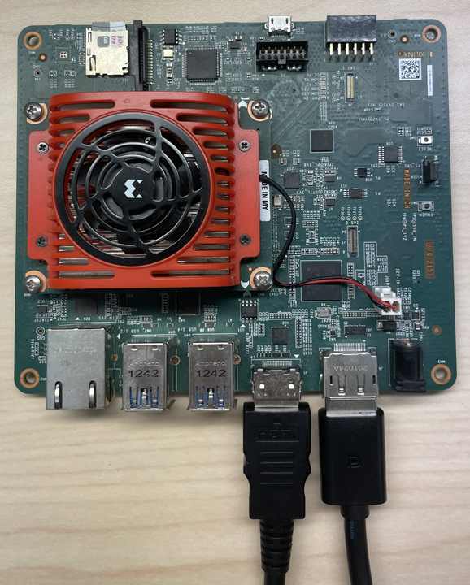
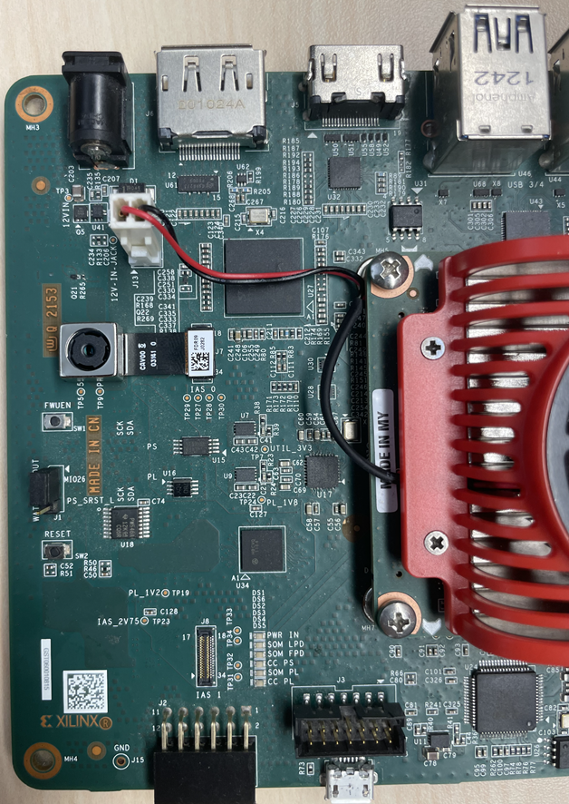
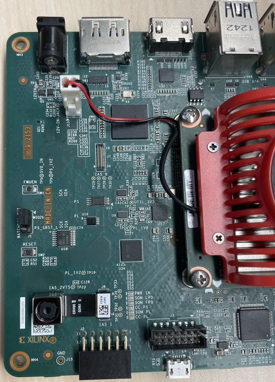
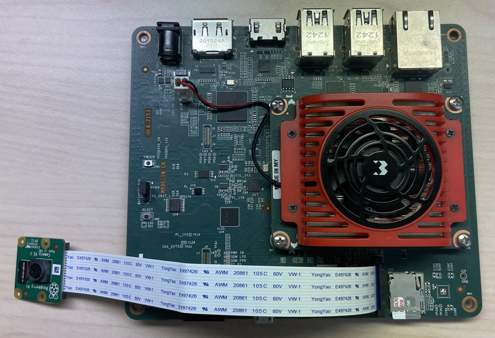

KV260 BIST Board Setup¶
Hardware Requirements¶
KV260 Vision AI Starter Kit
KV260 Power Supply & Adapter
MicroSD Card
Host Machine (Windows or Ubuntu)
Four USB Flash Drives
One Ethernet Cable
Four Female to Female Jumper Wires
1080P/4K Monitor and Power Supply
DisplayPort/HDMI Cable
Board Setup¶
This page shows how to set up the KV260 before running the BIST application.
Refer to the KR260 Board and the Interface layout below for connector reference numbers:

The following image shows a KV260 with all the hardware connected.

The BIST application requires the following hardware setup to run the full suite of hardware tests:
USB Flash Drive (x4)

Connect a USB Flash Drive to each of the four USB ports.
Ethernet Cable (x1)

Connect an Ethernet cable from the Ethernet port on the KV260 to the host machine.
PMOD (x1)

Connect Test PMOD on J2 on the KV260. Connect the pins on PMOD as described below.
Connect P1 to P7
Connect P2 to P8
Connect P3 to P9
Connect P4 to P10

Monitor

Before booting, connect a 1080P/4K monitor to the board via either DP and/or HDMI port.
AR1335 IAS-ISP Image Sensor Module

Connect the AR1335 Camera Sensor to J7/IAS0 on the KV260.
AR1335 IAS-direct Image Sensor Module

Connect the AR1335 Camera Sensor to J8/IAS1 on the KV260.
RaspberryPi Camera v2 module

Connect the Raspberry Pi Camera Module to J9 on the KV260.
Next Steps¶
Copyright © 2023 Advanced Micro Devices, Inc